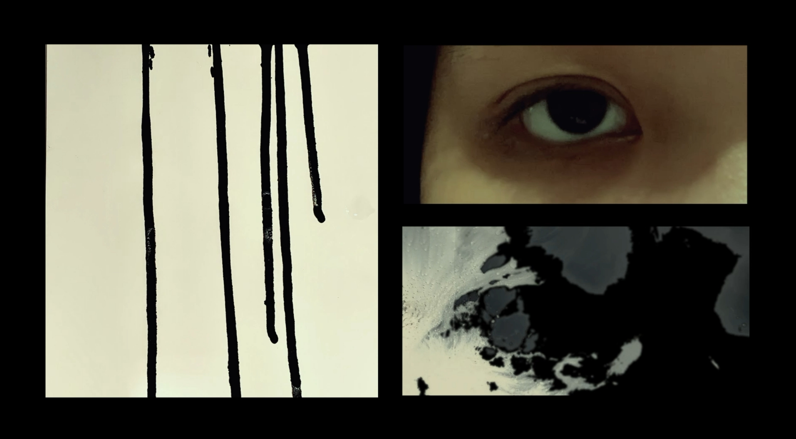
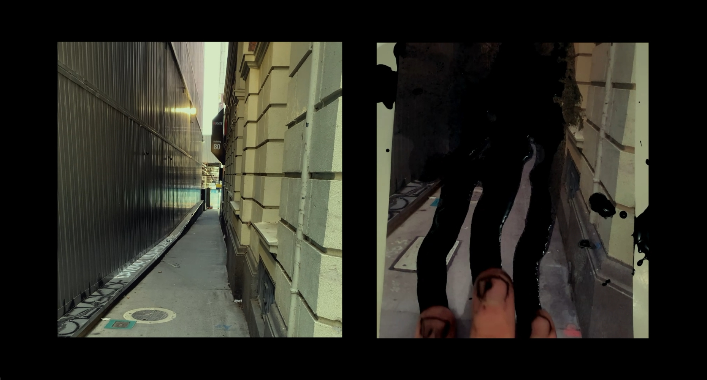
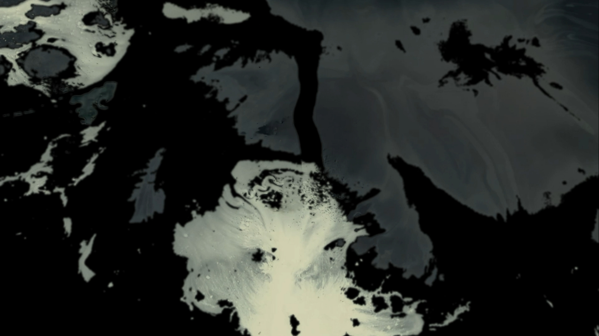
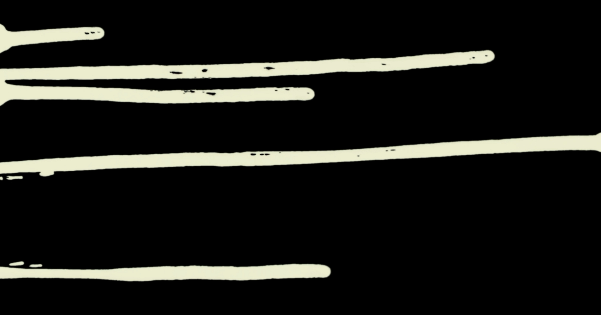
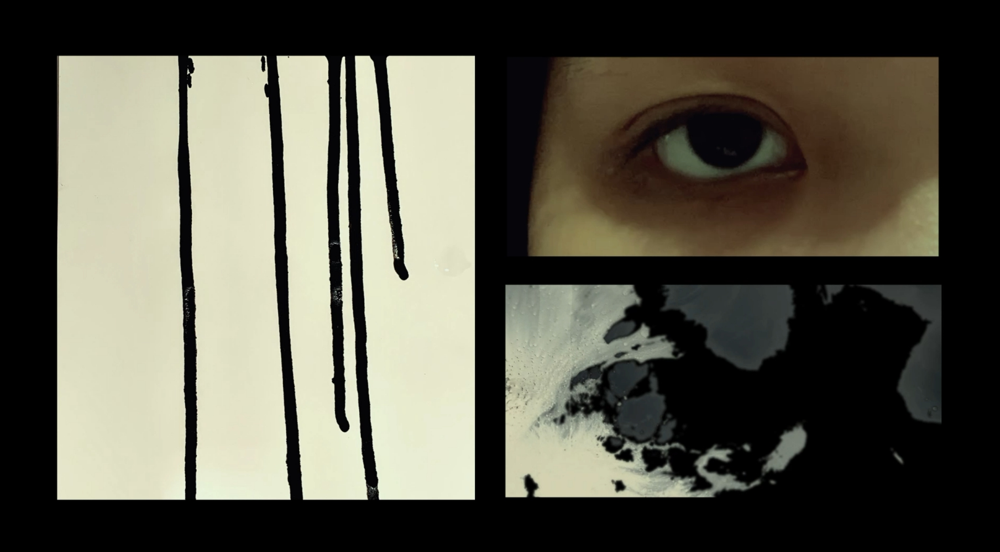
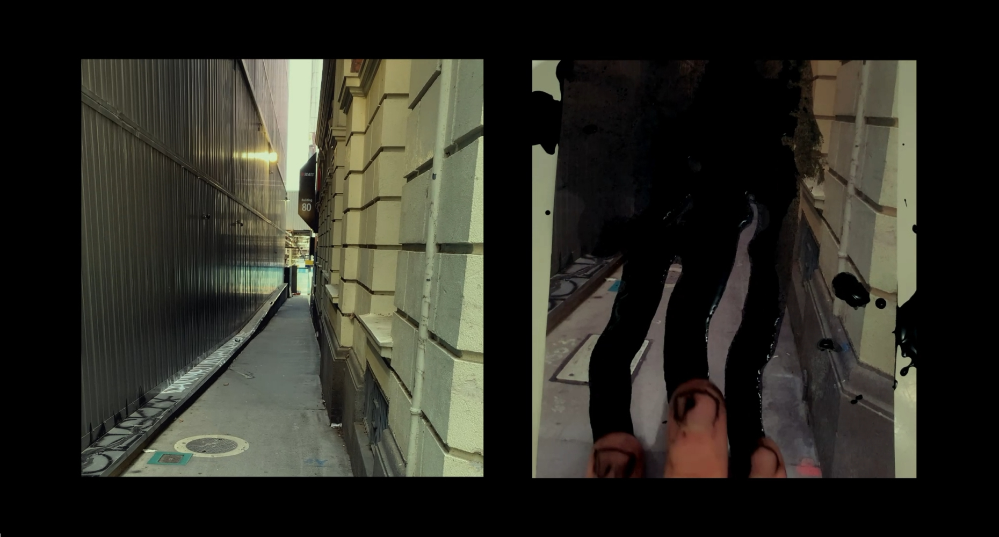
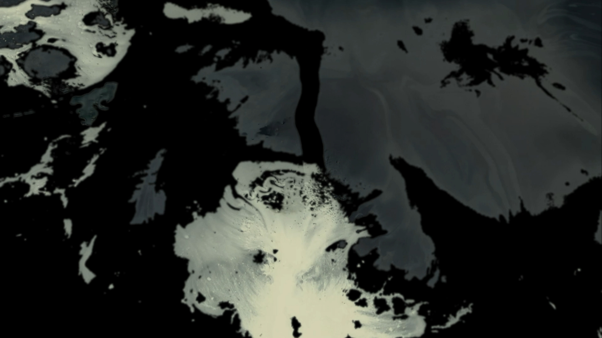
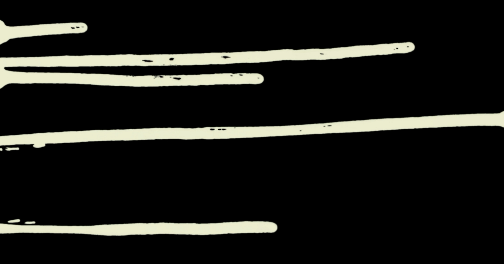

this place is gone
A short one-minute film based on Species of Spaces by Georges Perec, meditating on the transient nature of places.
    go back
A short one-minute film based on Species of Spaces by Georges Perec, meditating on the transient nature of places.
    go back